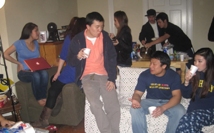
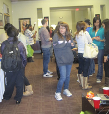

The first thing most people think of when you saw “sorority” is partying and drinking. While the sisters of aKDPhi at University of Michigan know how to let loose and have fun, we also recognize the importance of control and safety. As a chapter we do not condone underage drinking or the use of any illegal substances, and continually educate ourselves on self defense, alcohol and drug abuse, and date rape through a variety of workshops, panels, and professional speakers.
During active life, we mix and socialize with a variety of organizations from around the area and nation and participate in social events hosted by other organizations and clubs. Often times, aKDPhi will host our own parties to celebrate certain occasions such as our Founder’s Day in October, collaborations with other Asian American fraternities and sororities, convention during Memorial Day Weekend, and major holidays. Through these hosted, co-hosted, or attended events, we have networked and created friendships that have lasted us many years. In the end, we practice the idea of “work hard play harder,” understanding that as college students, we have a duty to our academics and our self development, but at the same time, recognize that college life is also full of opportunities to meet new people and create relationships in social settings.
(If you are interested in hosting a social event with us, please contact our social chair.)
University of Michigan, alpha Kappa Delta Phi 2010-2011
Layout © Maria Lee 2010